Last updated: 2022-11-11
Checks: 6 1
Knit directory: anderson-peffers_OA/
This reproducible R Markdown analysis was created with workflowr (version 1.7.0). The Checks tab describes the reproducibility checks that were applied when the results were created. The Past versions tab lists the development history.
The R Markdown file has unstaged changes. To know which version of
the R Markdown file created these results, you’ll want to first commit
it to the Git repo. If you’re still working on the analysis, you can
ignore this warning. When you’re finished, you can run
wflow_publish to commit the R Markdown file and build the
HTML.
Great job! The global environment was empty. Objects defined in the global environment can affect the analysis in your R Markdown file in unknown ways. For reproduciblity it’s best to always run the code in an empty environment.
The command set.seed(20220927) was run prior to running
the code in the R Markdown file. Setting a seed ensures that any results
that rely on randomness, e.g. subsampling or permutations, are
reproducible.
Great job! Recording the operating system, R version, and package versions is critical for reproducibility.
Nice! There were no cached chunks for this analysis, so you can be confident that you successfully produced the results during this run.
Great job! Using relative paths to the files within your workflowr project makes it easier to run your code on other machines.
Great! You are using Git for version control. Tracking code development and connecting the code version to the results is critical for reproducibility.
The results in this page were generated with repository version b8abb7e. See the Past versions tab to see a history of the changes made to the R Markdown and HTML files.
Note that you need to be careful to ensure that all relevant files for
the analysis have been committed to Git prior to generating the results
(you can use wflow_publish or
wflow_git_commit). workflowr only checks the R Markdown
file, but you know if there are other scripts or data files that it
depends on. Below is the status of the Git repository when the results
were generated:
Ignored files:
Ignored: .Rhistory
Ignored: .Rproj.user/
Ignored: analysis/.Rhistory
Unstaged changes:
Modified: analysis/03_Differential_expression.Rmd
Modified: analysis/04_Sequencing_QC_normalisation.Rmd
Modified: analysis/06_jDR.Rmd
Modified: analysis/07_Clustering.Rmd
Modified: analysis/08_Functional_enrichment.Rmd
Modified: analysis/_site.yml
Modified: analysis/index.Rmd
Modified: code/utility-functions.R
Modified: data/plasma_lncRNA_data.rds
Modified: data/sf_lncRNA_data.rds
Modified: output/plasma_limma_DE_results_log2.xlsx
Modified: output/plasma_proDA_DE_results.xlsx
Modified: output/sf_proDA_DE_results.xlsx
Modified: plasma_model.hdf5
Modified: sf_model.hdf5
Note that any generated files, e.g. HTML, png, CSS, etc., are not included in this status report because it is ok for generated content to have uncommitted changes.
These are the previous versions of the repository in which changes were
made to the R Markdown
(analysis/04_Sequencing_QC_normalisation.Rmd) and HTML
(docs/04_Sequencing_QC_normalisation.html) files. If you’ve
configured a remote Git repository (see ?wflow_git_remote),
click on the hyperlinks in the table below to view the files as they
were in that past version.
| File | Version | Author | Date | Message |
|---|---|---|---|---|
| Rmd | 928fd81 | ejjohnson93 | 2022-11-08 | jDR + EDA |
| html | 928fd81 | ejjohnson93 | 2022-11-08 | jDR + EDA |
| html | ae6f5f4 | ejjohnson93 | 2022-11-04 | Knitted docs |
| Rmd | dfeca72 | ejjohnson93 | 2022-11-04 | Sequencing data processing |
| Rmd | 00c9ca7 | ejjohnson93 | 2022-11-04 | Helper functions norm etc |
| html | 00c9ca7 | ejjohnson93 | 2022-11-04 | Helper functions norm etc |
| Rmd | e34c9f9 | ejjohnson93 | 2022-11-03 | Updated theme + additional analysis docs |
| Rmd | c63c64f | ejjohnson93 | 2022-11-01 | Sequencing files created |
| html | c63c64f | ejjohnson93 | 2022-11-01 | Sequencing files created |
source("./code/utility-functions.R") # load helper functions
library(tidyverse)
library(edgeR)
library(cowplot) # ggplot2 theme
library(viridis) # colour schemes
library(ggpubr) # utilities to arrange/annotate ggplot2 plots
library(R.utils) # function to count zero values
library(PCAtools) # pca & correlation plotFirst load the phenotype and sequencing info data:
# Pheno
plasma_pheno <- read.csv("./data/plasma_pheno.csv")
sf_pheno <- read.csv("./data/sf_pheno.csv")
# Sequencing info
plasma_sequencing_info <- read.csv("./data/plasma_sequencing_info.csv")
sf_sequencing_info <- read.csv("./data/sf_sequencing_info.csv")Process the phenotype and sequencing info tables and combine them:
# Match pheno data to sequencing info
plasma_pheno <- plasma_pheno[match(plasma_sequencing_info$customerID, plasma_pheno$Sample.Number),]
sf_pheno <- sf_pheno[match(sf_sequencing_info$customerID, sf_pheno$Sample.Number),]
# Join sequencing and pheno information
plasma_pheno <- cbind(plasma_pheno, plasma_sequencing_info)
sf_pheno <- cbind(sf_pheno, sf_sequencing_info)
# Process phenotype data to include a 'sample_' prefix in front of the sample IDs
# Convert horse ID to a factor
plasma_pheno$Sample.Number <- paste0("Sample_", plasma_pheno$Sample.Number)
plasma_pheno$Horse <- as.factor(plasma_pheno$Horse)
sf_pheno$Sample.Number <- paste0("Sample_", sf_pheno$Sample.Number)
sf_pheno$Horse <- as.factor(sf_pheno$Horse)
sf_pheno <- sf_pheno[,-8]Next, load and process each type of sequencing data.
The data was provided in CPM format. The reports TAmiRNA provided contain the raw counts for the miRNA. To assess the normalisation the raw counts and the CPM normalised counts were both read in.
# Raw miRNA counts
plasma_miRNA_data_raw <- read.csv("./data/raw_miRNA_plasma.csv", row.names = 1)
colnames(plasma_miRNA_data_raw) <- gsub(pattern = "X", replacement = "Sample_", x = colnames(plasma_miRNA_data_raw))
# CPM normalised plasma miRNA data
plasma_miRNA_data <- read.csv("./data/miRNA_plasma.csv", row.names = 1)
colnames(plasma_miRNA_data) <- gsub(pattern = "X", replacement = "Sample_", x = colnames(plasma_miRNA_data))Process raw data and make sure its in the same order as the phenotype table:
plasma_miRNA_data <- plasma_miRNA_data[,match(plasma_pheno$Sample.Number, colnames(plasma_miRNA_data))]Manually applied TMM normalisation then converted the counts into CPM.
plasma_miRNA_data_DGE <- DGEList(counts = plasma_miRNA_data_raw, lib.size = colSums(plasma_miRNA_data), samples = plasma_pheno)
plasma_miRNA_data_DGE_TMM <- calcNormFactors(plasma_miRNA_data_DGE, method = "TMM")
raw_counts_CPM <- cpm(plasma_miRNA_data_DGE, log=FALSE)
raw_counts_CPM_TMM <- cpm(plasma_miRNA_data_DGE_TMM, log=FALSE)Compared the distribution of the data provided to the TMM normalised CPM values.
bp_plasma_miRNA_data <- gg_boxplot(plasma_miRNA_data,
log.transform=T,
title="Plasma miRNA - original CPM data provided",
xlab="Sample ID", ylab="Log2 CPM")
bp_raw_counts_CPM_TMM <- gg_boxplot(raw_counts_CPM_TMM,
log.transform=T,
title="Plasma miRNA - raw counts, TMM and CPM normalised",
xlab="Sample ID", ylab="Log2 CPM")
bp_plasma_miRNA_data_raw <- gg_boxplot(plasma_miRNA_data_raw,
log.transform=T,
title="Plasma miRNA - Log2 raw counts",
xlab="Sample ID", ylab="Log2 CPM")
bp_raw_counts_CPM <- gg_boxplot(raw_counts_CPM,
log.transform=T,
title="Plasma miRNA - raw counts, just CPM normalised",
xlab="Sample ID", ylab="Log2 CPM")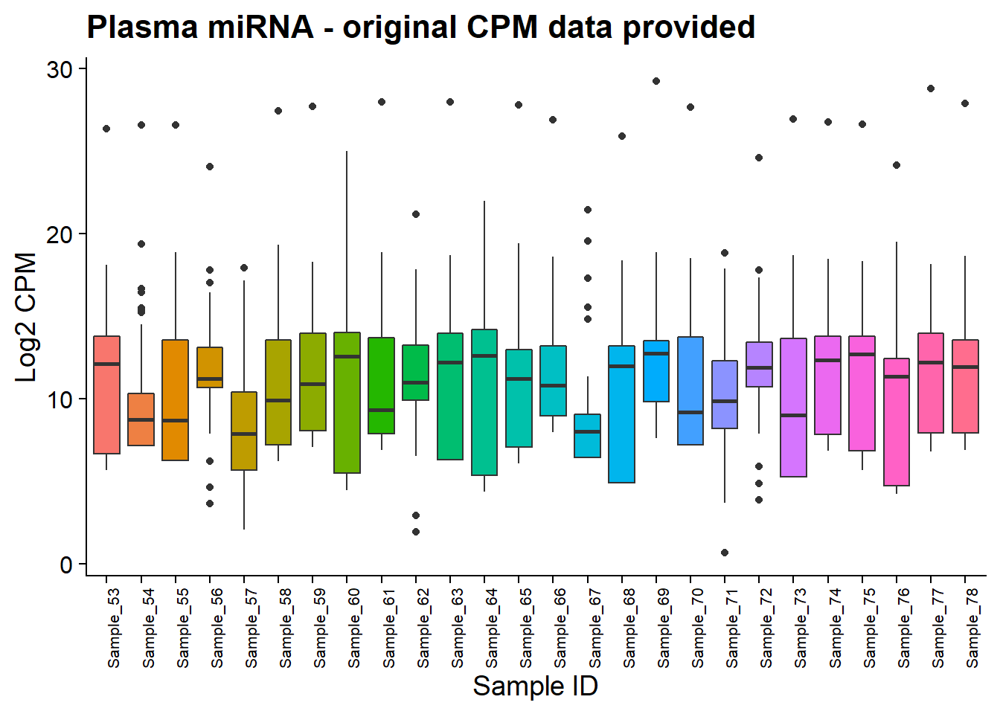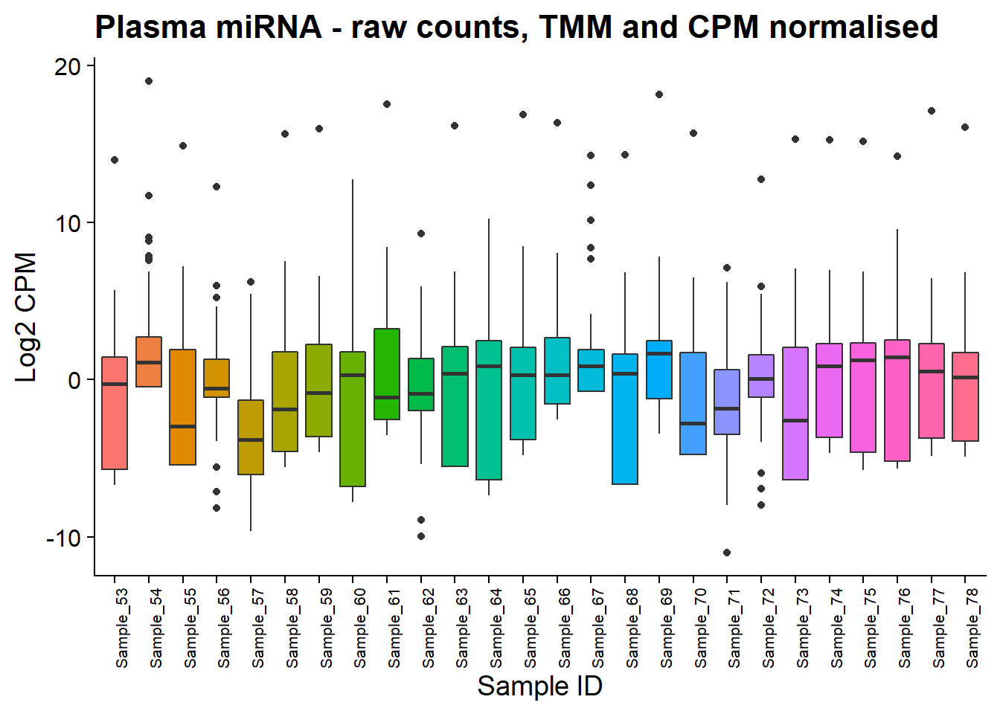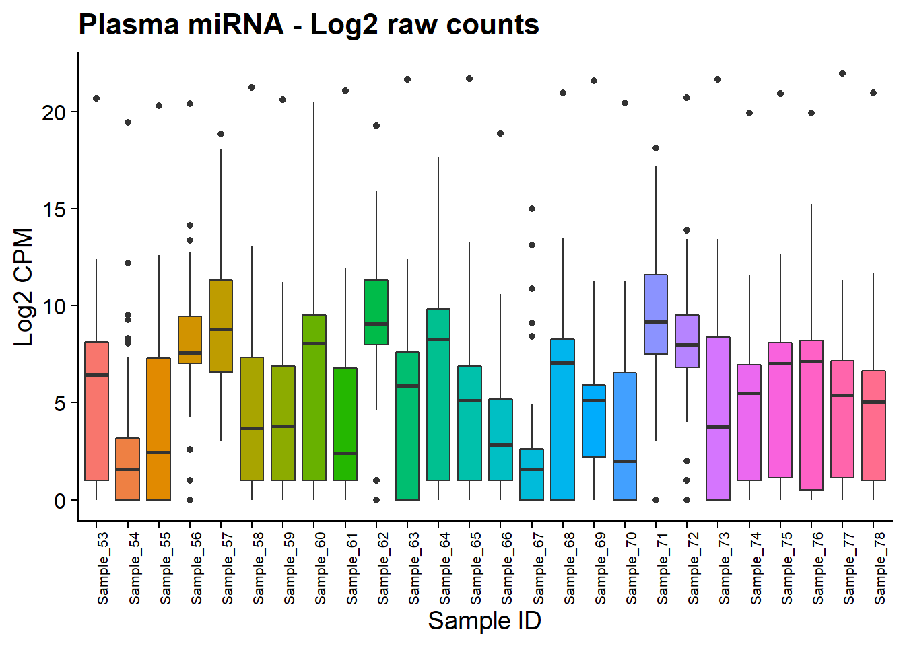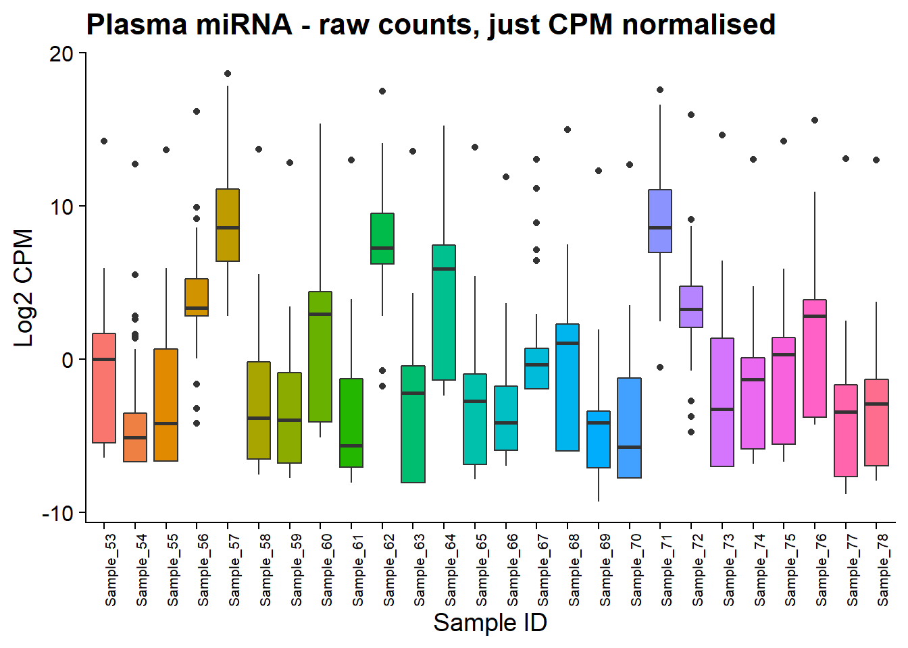
# CPM normalised SF miRNA data
sf_miRNA_data <- read.csv("./data/miRNA_sf.csv", row.names = 1)
colnames(sf_miRNA_data) <- gsub(pattern = "X", replacement = "Sample_", x = colnames(sf_miRNA_data))Process raw data and make sure its in the same order as the phenotype table:
sf_miRNA_data <- sf_miRNA_data[,match(sf_pheno$Sample.Number, colnames(sf_miRNA_data))]Look at the distribution of the data provided…
bp_sf_miRNA_data <- gg_boxplot(sf_miRNA_data,
log.transform=T,
title="Synovial fluid miRNA - original CPM data provided",
xlab="Sample ID", ylab="Log2 CPM")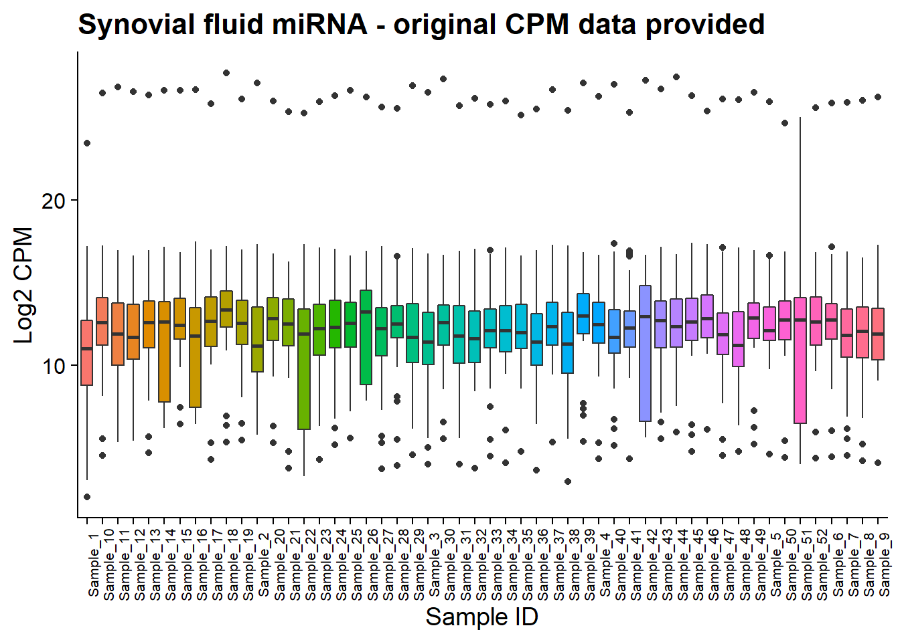
The rest of the sequencing data didn’t have raw counts.The CPM data provided will be read in for the lncRNA, snoRNA, snRNA, tRNA.
# CPM normalised plasma lncRNA data
plasma_lncRNA_data <- read.csv("./data/lncRNA_plasma.csv", row.names = 1)
colnames(plasma_lncRNA_data) <- gsub(pattern = "X", replacement = "Sample_", x = colnames(plasma_lncRNA_data))
row.names(plasma_lncRNA_data) <- gsub(pattern = "_9796", replacement = "", x = row.names(plasma_lncRNA_data))Process raw data and make sure its in the same order as the phenotype table:
plasma_lncRNA_data <- plasma_lncRNA_data[,match(plasma_pheno$Sample.Number, colnames(plasma_lncRNA_data))]Look at the distribution of the data provided…
bp_plasma_lncRNA_data <- gg_boxplot(plasma_lncRNA_data,
log.transform =T,
title="Plasma lncRNA",
xlab="Sample ID", ylab="Log2 CPM")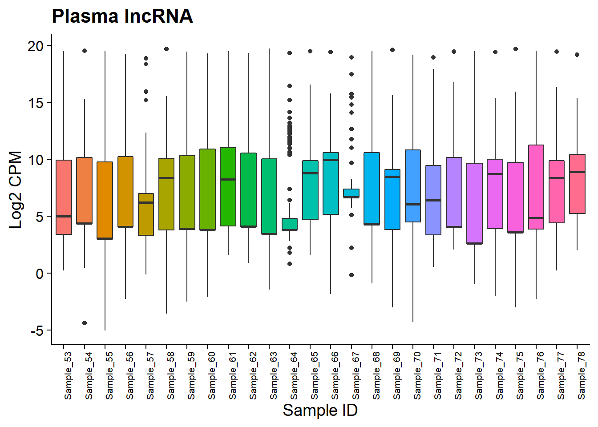
# CPM normalised SF lncRNA data
sf_lncRNA_data <- read.csv("./data/lncRNA_sf.csv", row.names = 1)
colnames(sf_lncRNA_data) <- gsub(pattern = "X", replacement = "Sample_", x = colnames(sf_lncRNA_data))
row.names(sf_lncRNA_data) <- gsub(pattern = "_9796", replacement = "", x = row.names(sf_lncRNA_data))Process raw data and make sure its in the same order as the phenotype table:
sf_lncRNA_data <- sf_lncRNA_data[,match(sf_pheno$Sample.Number, colnames(sf_lncRNA_data))]Look at the distribution of the data provided…
bp_sf_lncRNA_data <- gg_boxplot(sf_lncRNA_data,
log.transform=T,
title="Synovial fluid lncRNA",
xlab="Sample ID", ylab="Log2 CPM")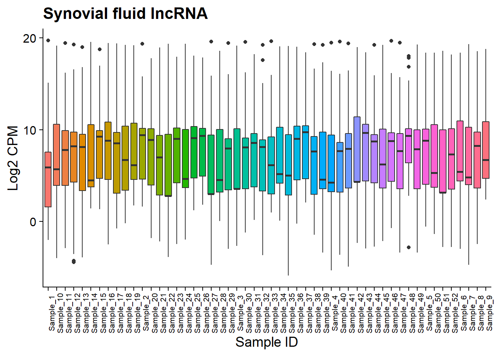
The rest of the sequencing data didn’t have raw counts.The CPM data provided will be read in for the snoRNA, snoRNA, snRNA, tRNA.
# CPM normalised plasma snoRNA data
plasma_snoRNA_data <- read.csv("./data/snoRNA_plasma.csv", row.names = 1)
colnames(plasma_snoRNA_data) <- gsub(pattern = "X", replacement = "Sample_", x = colnames(plasma_snoRNA_data))Process raw data and make sure its in the same order as the phenotype table:
plasma_snoRNA_data <- plasma_snoRNA_data[,match(plasma_pheno$Sample.Number, colnames(plasma_snoRNA_data))]Look at the distribution of the data provided…
bp_plasma_snoRNA_data <- gg_boxplot(plasma_snoRNA_data,
log.transform =T,
title="Plasma snoRNA",
xlab="Sample ID", ylab="Log2 CPM")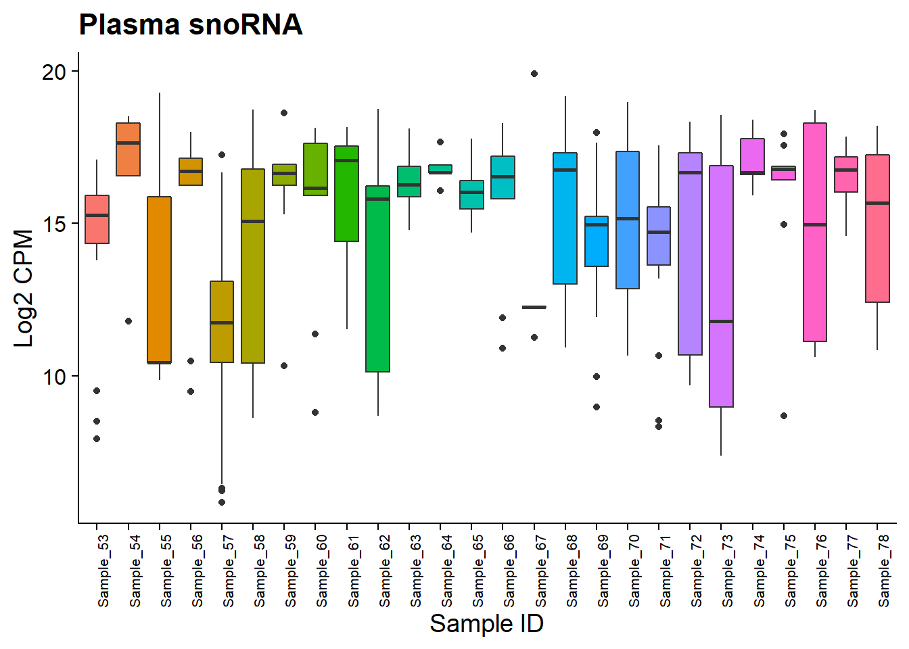
# CPM normalised SF snoRNA data
sf_snoRNA_data <- read.csv("./data/snoRNA_sf.csv", row.names = 1)
colnames(sf_snoRNA_data) <- gsub(pattern = "X", replacement = "Sample_", x = colnames(sf_snoRNA_data))Process raw data and make sure its in the same order as the phenotype table:
sf_snoRNA_data <- sf_snoRNA_data[,match(sf_pheno$Sample.Number, colnames(sf_snoRNA_data))]Look at the distribution of the data provided…
bp_sf_snoRNA_data <- gg_boxplot(sf_snoRNA_data,
log.transform=T,
title="Synovial fluid snoRNA",
xlab="Sample ID", ylab="Log2 CPM")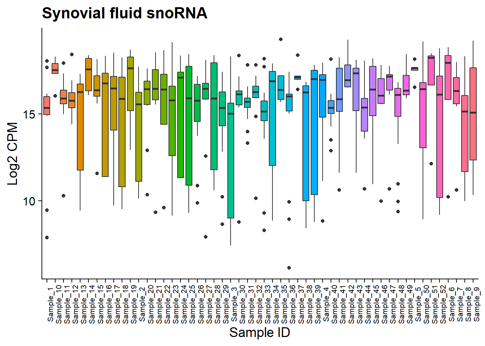
The rest of the sequencing data didn’t have raw counts.The CPM data provided will be read in for the snRNA, snRNA, snRNA, tRNA.
# CPM normalised plasma snRNA data
plasma_snRNA_data <- read.csv("./data/snRNA_plasma.csv", row.names = 1)
colnames(plasma_snRNA_data) <- gsub(pattern = "X", replacement = "Sample_", x = colnames(plasma_snRNA_data))Process raw data and make sure its in the same order as the phenotype table:
plasma_snRNA_data <- plasma_snRNA_data[,match(plasma_pheno$Sample.Number, colnames(plasma_snRNA_data))]Look at the distribution of the data provided…
bp_plasma_snRNA_data <- gg_boxplot(plasma_snRNA_data,
log.transform =T,
title="Plasma snRNA",
xlab="Sample ID", ylab="Log2 CPM")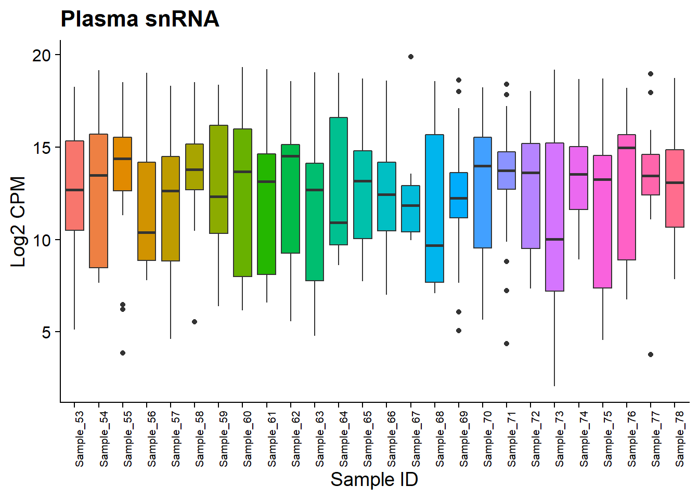
# CPM normalised SF snRNA data
sf_snRNA_data <- read.csv("./data/snRNA_sf.csv", row.names = 1)
colnames(sf_snRNA_data) <- gsub(pattern = "X", replacement = "Sample_", x = colnames(sf_snRNA_data))Process raw data and make sure its in the same order as the phenotype table:
sf_snRNA_data <- sf_snRNA_data[,match(sf_pheno$Sample.Number, colnames(sf_snRNA_data))]Look at the distribution of the data provided…
bp_sf_snRNA_data <- gg_boxplot(sf_snRNA_data,
log.transform=T,
title="Synovial fluid snRNA",
xlab="Sample ID", ylab="Log2 CPM")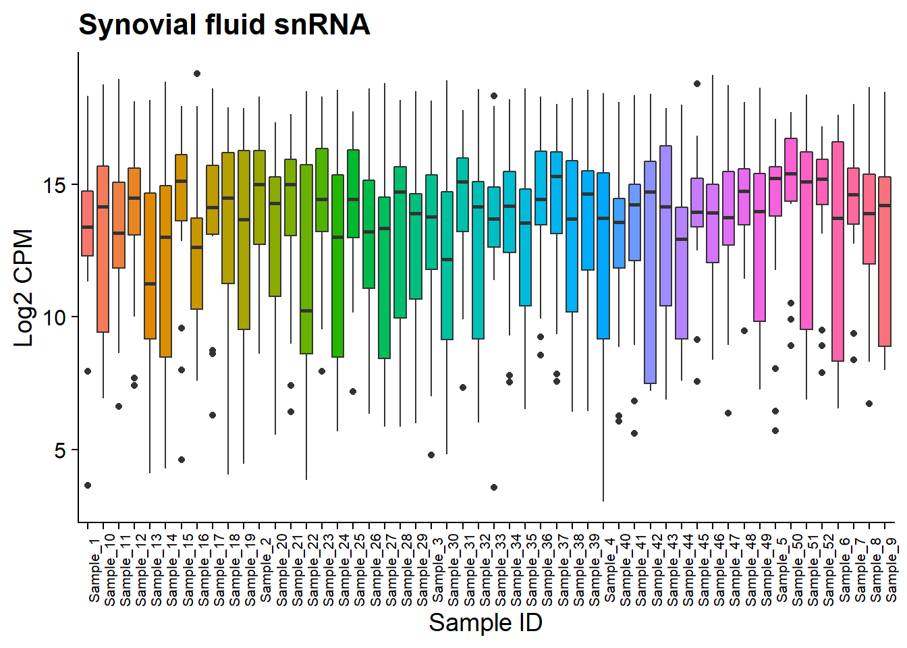
The rest of the sequencing data didn’t have raw counts.The CPM data provided will be read in for the tRNA, tRNA, tRNA, tRNA.
# CPM normalised plasma tRNA data
plasma_tRNA_data <- read.csv("./data/tRNA_plasma.csv", row.names = 1)
colnames(plasma_tRNA_data) <- gsub(pattern = "X", replacement = "Sample_", x = colnames(plasma_tRNA_data))Process raw data and make sure its in the same order as the phenotype table:
plasma_tRNA_data <- plasma_tRNA_data[,match(plasma_pheno$Sample.Number, colnames(plasma_tRNA_data))]Look at the distribution of the data provided…
bp_plasma_tRNA_data <- gg_boxplot(plasma_tRNA_data,
log.transform =T,
title="Plasma tRNA",
xlab="Sample ID", ylab="Log2 CPM")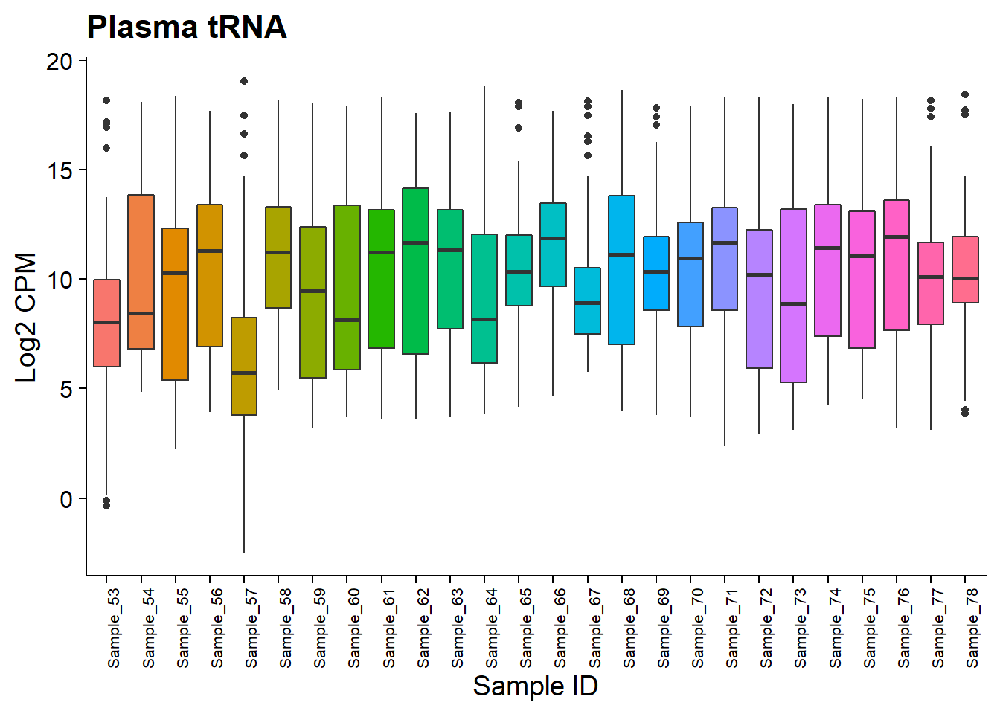
A problem with this analysis is the high number of zeroes present in the data. These could be biological zeroes or sampling zeroes. This problem has been reviewed in depth elsewhere (Silverman et al. 2020).
It is normal in sequencing analysis to add a small constant to the count data before log2 transforming it. In the case of sampling zeroes adding a small constant to all the data before log-transforming would be inappropriate. The plasma miRNA data will be used to demonstrate this problem below.
Create two dataframes, one a log transformed matrix with all the zeroes removed, the other a matrix with a small constant added before log transformation.
# Log2 transform data then remove the Inf values resulting from log2 transforming 0
# Inf2NA is a custom helper function
plasma_miRNA_data_log2 <- plasma_miRNA_data %>% log2(.) %>% Inf2NA(.)
# Add a small constant to the data then log transform
plasma_miRNA_data_log2_constant <- log2(plasma_miRNA_data+1)PCAtools requires the row names in the metadata to be the same as the column names.
row.names(plasma_pheno) <- plasma_pheno$Sample.NumberCarry out PCA on the log2 transformed data and the log2+1 transformed data:
# Log2
plasma_miRNA_data_log2_PCA <- pca(na.omit(plasma_miRNA_data_log2), metadata = plasma_pheno, scale = TRUE, center = TRUE)
# Log2+1
plasma_miRNA_data_log2_constant_PCA <- pca(na.omit(plasma_miRNA_data_log2_constant), metadata = plasma_pheno, scale = TRUE, center = TRUE)Now create PCA plots and correlation plots for the data.
# Log2
# Correlation plot
log2_corplot <- eigencorplotPCA(plasma_miRNA_data_log2_PCA,
metavars = c("Day", "Horse", "Date", "miRNA"))
# PCA plot
log2_PCAplot <- plotPCA(plasma_miRNA_data_log2_PCA,
PCs=c(1,2),
colour.data=plasma_pheno$Day,
shape.data=plasma_pheno$Horse,
colour.lab="Day",
shape.lab="Horse")# Log2 + 1
# Correlation plot
log2_constant_corplot <- eigencorplotPCA(plasma_miRNA_data_log2_constant_PCA,
metavars = c("Day", "Horse", "Date", "miRNA"))
# PCA plot
log2_constant_PCAplot <- plotPCA(plasma_miRNA_data_log2_constant_PCA,
PCs=c(1,2),
colour.data=plasma_pheno$Day,
shape.data=plasma_pheno$Horse,
colour.lab="Day",
shape.lab="Horse")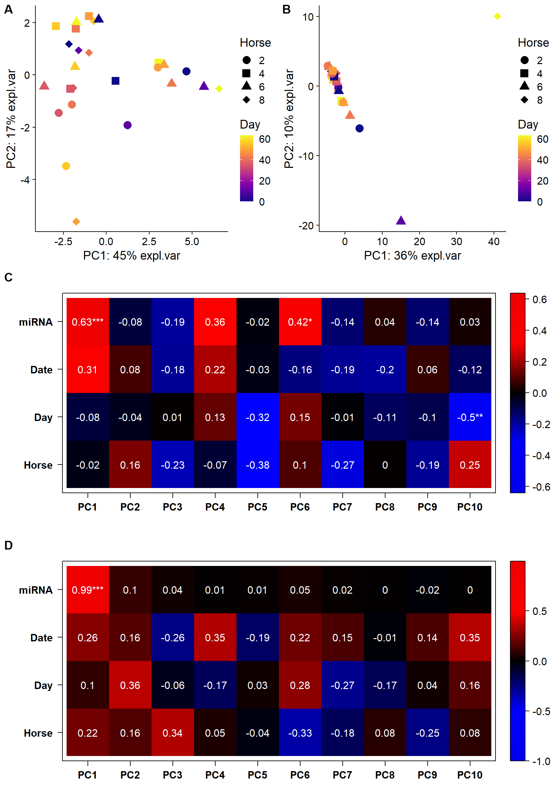
Pearson’s correlation of small RNA sequencing depth vs number of missing values:
cor.test(colSums(isZero(plasma_miRNA_data)), plasma_pheno$miRNA, method = "pearson")
Pearson's product-moment correlation
data: colSums(isZero(plasma_miRNA_data)) and plasma_pheno$miRNA
t = -17.234, df = 24, p-value = 5.097e-15
alternative hypothesis: true correlation is not equal to 0
95 percent confidence interval:
-0.9829902 -0.9157317
sample estimates:
cor
-0.9618909 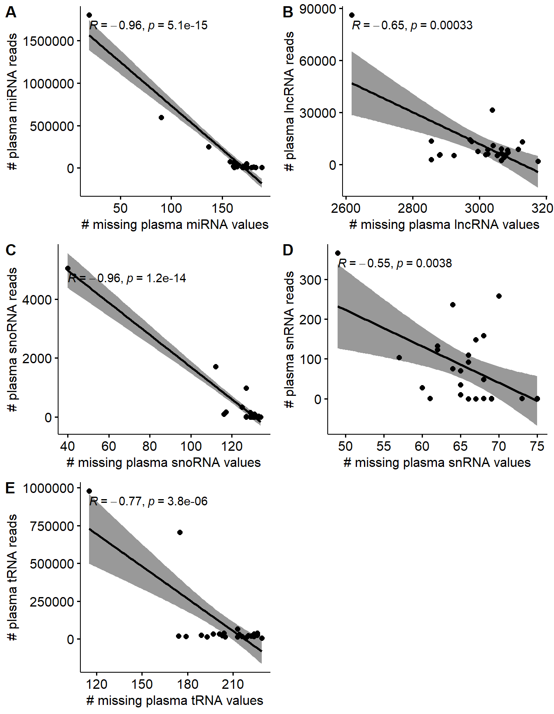
The results demonstrate a relationship between sequencing depth and missingness. However, that result doesn’t appear to be perfectly linear.
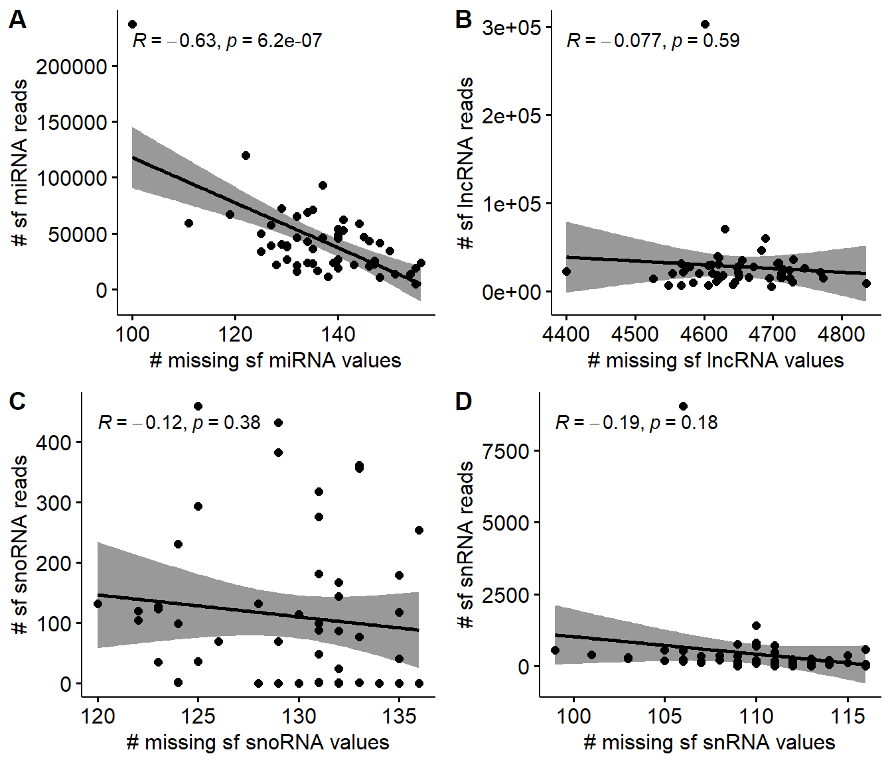
# Plasma
plasma_miRNA_data <- plasma_miRNA_data[rowSums(plasma_miRNA_data>0)>=round(ncol(plasma_miRNA_data)*0.6),]
plasma_lncRNA_data <- plasma_lncRNA_data[rowSums(plasma_lncRNA_data>0)>=round(ncol(plasma_lncRNA_data)*0.6),]
plasma_snoRNA_data <- plasma_snoRNA_data[rowSums(plasma_snoRNA_data>0)>=round(ncol(plasma_snoRNA_data)*0.6),]
plasma_snRNA_data <- plasma_snRNA_data[rowSums(plasma_snRNA_data>0)>=round(ncol(plasma_snRNA_data)*0.6),]
plasma_tRNA_data <- plasma_tRNA_data[rowSums(plasma_tRNA_data>0)>=round(ncol(plasma_tRNA_data)*0.6),]
# SF
sf_miRNA_data <- sf_miRNA_data[rowSums(sf_miRNA_data>0)>=round(ncol(sf_miRNA_data)*0.6),]
sf_lncRNA_data <- sf_lncRNA_data[rowSums(sf_lncRNA_data>0)>=round(ncol(sf_lncRNA_data)*0.6),]
sf_snoRNA_data <- sf_snoRNA_data[rowSums(sf_snoRNA_data>0)>=round(ncol(sf_snoRNA_data)*0.6),]
sf_snRNA_data <- sf_snRNA_data[rowSums(sf_snRNA_data>0)>=round(ncol(sf_snRNA_data)*0.6),]Now that data has been filtered for sampling bias, log2 normalise and add constant to filtered data:
# Plasma
saveRDS(plasma_pheno, "./data/plasma_sequencing_pheno.rds")
saveRDS(log2(plasma_miRNA_data+1), "./data/plasma_miRNA_data.rds")
saveRDS(log2(plasma_lncRNA_data+1), "./data/plasma_lncRNA_data.rds")
saveRDS(log2(plasma_snoRNA_data+1), "./data/plasma_snoRNA_data.rds")
saveRDS(log2(plasma_snRNA_data+1), "./data/plasma_snRNA_data.rds")
saveRDS(log2(plasma_tRNA_data+1), "./data/plasma_tRNA_data.rds")
# SF
saveRDS(sf_pheno, "./data/sf_sequencing_pheno.rds")
saveRDS(log2(sf_miRNA_data+1), "./data/sf_miRNA_data.rds")
saveRDS(log2(sf_lncRNA_data+1), "./data/sf_lncRNA_data.rds")
saveRDS(log2(sf_snoRNA_data+1), "./data/sf_snoRNA_data.rds")
saveRDS(log2(sf_snRNA_data+1), "./data/sf_snRNA_data.rds")
sessionInfo()R version 4.2.0 (2022-04-22 ucrt)
Platform: x86_64-w64-mingw32/x64 (64-bit)
Running under: Windows 10 x64 (build 19044)
Matrix products: default
locale:
[1] LC_COLLATE=English_United Kingdom.utf8
[2] LC_CTYPE=English_United Kingdom.utf8
[3] LC_MONETARY=English_United Kingdom.utf8
[4] LC_NUMERIC=C
[5] LC_TIME=English_United Kingdom.utf8
attached base packages:
[1] stats graphics grDevices utils datasets methods base
other attached packages:
[1] ggpubr_0.4.0 viridis_0.6.2 viridisLite_0.4.0 edgeR_3.38.1
[5] limma_3.52.1 R.utils_2.11.0 R.oo_1.25.0 R.methodsS3_1.8.2
[9] PCAtools_2.8.0 ggrepel_0.9.1 mixOmics_6.20.0 lattice_0.20-45
[13] MASS_7.3-56 cowplot_1.1.1 reshape2_1.4.4 forcats_0.5.1
[17] stringr_1.4.0 dplyr_1.0.9 purrr_0.3.4 readr_2.1.2
[21] tidyr_1.2.0 tibble_3.1.7 ggplot2_3.3.6 tidyverse_1.3.1
[25] workflowr_1.7.0
loaded via a namespace (and not attached):
[1] colorspace_2.0-3 ggsignif_0.6.3
[3] ellipsis_0.3.2 rprojroot_2.0.3
[5] corpcor_1.6.10 fs_1.5.2
[7] rstudioapi_0.13 farver_2.1.0
[9] RSpectra_0.16-1 fansi_1.0.3
[11] lubridate_1.8.0 xml2_1.3.3
[13] splines_4.2.0 codetools_0.2-18
[15] sparseMatrixStats_1.8.0 knitr_1.39
[17] jsonlite_1.8.0 broom_0.8.0
[19] dbplyr_2.2.0 compiler_4.2.0
[21] httr_1.4.3 dqrng_0.3.0
[23] backports_1.4.1 assertthat_0.2.1
[25] Matrix_1.5-1 fastmap_1.1.0
[27] cli_3.3.0 later_1.3.0
[29] BiocSingular_1.12.0 htmltools_0.5.2
[31] tools_4.2.0 rsvd_1.0.5
[33] igraph_1.3.2 gtable_0.3.0
[35] glue_1.6.2 Rcpp_1.0.8.3
[37] carData_3.0-5 cellranger_1.1.0
[39] jquerylib_0.1.4 vctrs_0.4.1
[41] nlme_3.1-157 DelayedMatrixStats_1.18.0
[43] xfun_0.31 ps_1.7.0
[45] beachmat_2.12.0 rvest_1.0.2
[47] lifecycle_1.0.1 irlba_2.3.5
[49] rstatix_0.7.0 getPass_0.2-2
[51] scales_1.2.0 hms_1.1.1
[53] promises_1.2.0.1 MatrixGenerics_1.8.0
[55] parallel_4.2.0 RColorBrewer_1.1-3
[57] yaml_2.3.5 gridExtra_2.3
[59] sass_0.4.1 stringi_1.7.6
[61] highr_0.9 S4Vectors_0.34.0
[63] ScaledMatrix_1.4.0 BiocGenerics_0.42.0
[65] BiocParallel_1.30.3 rlang_1.0.2
[67] pkgconfig_2.0.3 matrixStats_0.62.0
[69] evaluate_0.15 labeling_0.4.2
[71] processx_3.6.0 tidyselect_1.1.2
[73] plyr_1.8.7 magrittr_2.0.3
[75] R6_2.5.1 IRanges_2.30.0
[77] generics_0.1.2 DelayedArray_0.22.0
[79] DBI_1.1.2 mgcv_1.8-40
[81] pillar_1.7.0 haven_2.5.0
[83] whisker_0.4 withr_2.5.0
[85] abind_1.4-5 car_3.1-0
[87] modelr_0.1.8 crayon_1.5.1
[89] rARPACK_0.11-0 utf8_1.2.2
[91] ellipse_0.4.3 tzdb_0.3.0
[93] rmarkdown_2.14 locfit_1.5-9.5
[95] grid_4.2.0 readxl_1.4.0
[97] callr_3.7.0 git2r_0.30.1
[99] reprex_2.0.1 digest_0.6.29
[101] httpuv_1.6.5 stats4_4.2.0
[103] munsell_0.5.0 bslib_0.3.1